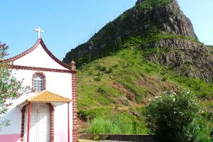

Why Cape Verde?
History of the Islands
Cape Verde, an archipelago off the west coast of Africa, has a rich history shaped by its strategic location in the Atlantic. Uninhabited until Portuguese explorers arrived in 1456, the islands became a hub for the transatlantic slave trade, blending African and European cultures to create a unique Creole identity.
Despite its wealth during the trade era, Cape Verde suffered from pirate raids, colonial neglect, and devastating famines caused by frequent droughts. This history of resilience and cultural fusion is reflected in its vibrant music, language, and traditions.